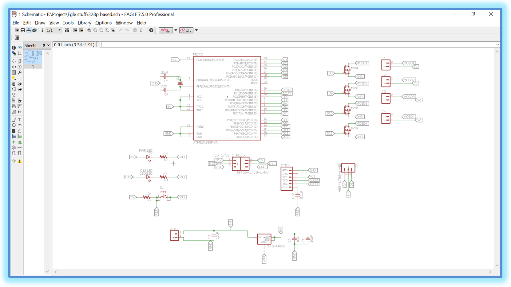
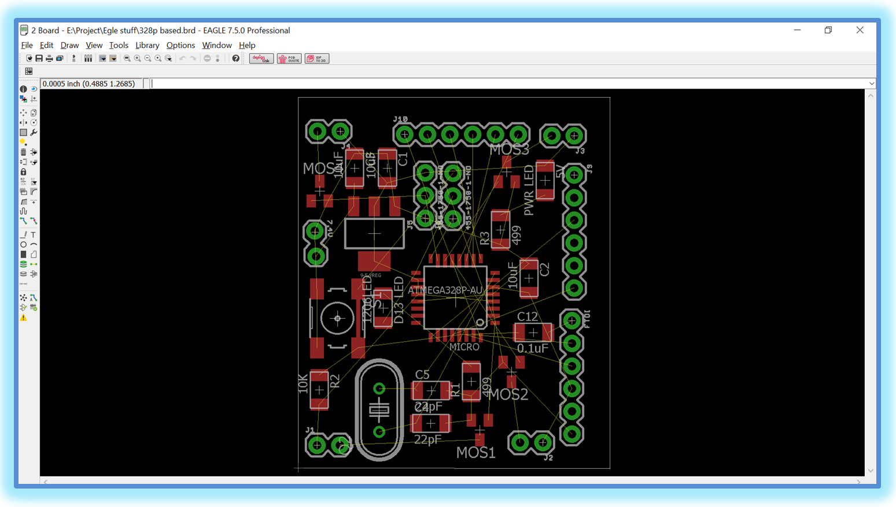
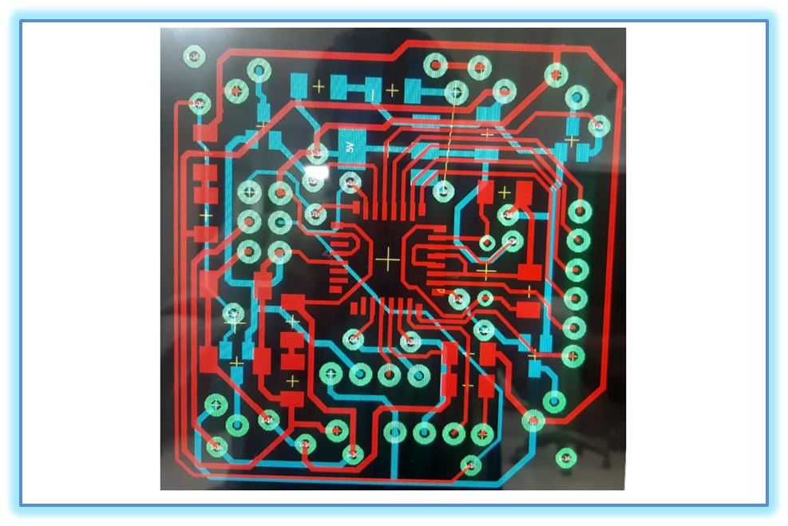
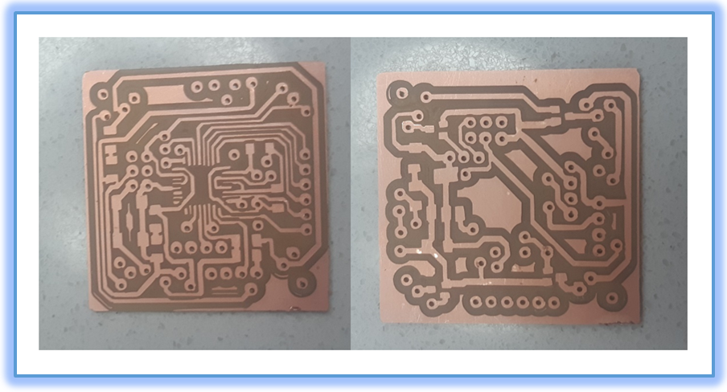
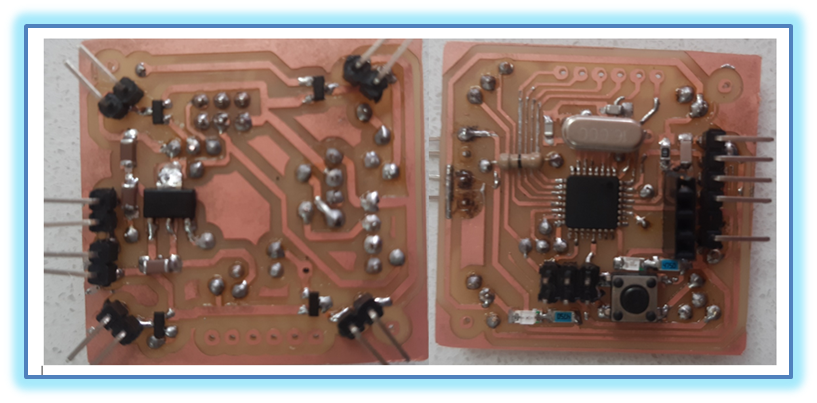

|
SUKKUR IBA UNIVERSITY Merit-Quality-Excellence DEPARTMENT OF ELECTRICAL ENGINEERING |
|
Flight Controller PCB Design |
There are number of softwares available on internet for PCB design, including Altium Designer, Fusion 360, NI Multisim, Autodesk EAGLE, KiCad EDA, CAM350, SolidWorks PCB etc. All of these softwares have their own pros and cons, but the one that we chose Eagle because we had already used this software in previous semesters. Eagle software is a scriptable Application having several features like Schematic Capture, Printed Circuit Board (PCB) Designing, Routing, and Computer Aided Manufacturing (CAM). So here we present the whole process of flight controller design using Eagle software. As PCB designing is a two-step process. The first step includes making a schematic and the second is PCB Layout, based on the schematic. Both of them work side by side. So the first step is to design a schematic for PCB. Click Here for Eagle File of PCB design. |
|
Designing Schematic for PCB: |
First, we need to open the Eagle Software from the desktop shortcut or from the search option. When Eagle application opens successfully, we need to click on File and then to create a new project by selecting New Project option. Then we need to name the file and click on the project to create new schematic. A new schematic window will open with a blank work space. This is called the Schematic Editor, where can draw schematics of our design. Next is to save the schematic file with extension .sch. We started our work by first reading the datasheet of the required components. Then we simply added our desired components to the schematic. For adding any component to Schematic one need to have the basic knowledge of Certain Package containing that contain the required components. For this we need to, select Add option from the side tool bar. A new window opens with a list of all the components available in the libraries. Then we need to just select the desired components and add it to the schematic. We added AT Mega 328P Microcontroller, Resistors, Capacitors, Voltage Regulator, Female Connectors, Push Button in our schematic. |
|
Connecting Components in Schematic: |
Then the Next step includes connecting the components. For this we need to use net to sketch a small wires from the terminal of components. Then we need to use the Label command and connect a label to each end of the wire. When we click on a lablel, it will pop-up a rename pane, so there we can give a name to label. In order to connect the components, we just need to name the two or more labels same—same labels automatically get connected to one another. After making all the connections, the final schematic looked like the figure below. Then we simply saved the schematic file. Working on schematic was quite easy task because we had the idea what to add. One need to be cautious while connecting the components sometime seems to be connected but they are not so for that we need to select the component and move in randomly. If wires can move along with the components, it means connection is done. But if not, we need to connect the wires or labels again. After this we Applied ERC (Electrical Rule Check) to further verify the connectivity. But luckily, in our case we didn’t find any error or Warnings. |
|
 |
|
PCB Layout Design: |
After completing the schematic, we have to proceed with the design of the PCB layout. For that we need to select the switch to board option from the top tool bar. We can create the board file from the schematic. A new window will appear, which is the PCB layout editor. The black space is the board area and all the components are at the outside bottom left of the board area. Now, we need to place the components in to the editor. Now, by using the group option from the side tool bar, we need to select all the components and using move option we need to move all the components to board area. Then we need to separate the components so that the yellow color lines called air wires can be clearly visible and then we need to place the components according to our design requirements. |
|
 |
|
Routing: |
Now, it was time to make the connections or traces for the Printed Circuit Board. For this, we used the Route tool from the side tool bar. Also set the width of the trace to be routed as your requirement. In our case we chosen the wire size of 0.012. After this we need to selected the top layer, as our PCB is a double sided board. As we start routing we see the air wires disappearing. Routing is one of the complicated step in PCB Designing. It is a tiresome job especially when the circuit is double layered. We gave a lot of time to routing because our circuit was quite complicated and we had to make it as smaller as possible. We did a lot of Mistakes while routing. Many routed air wires were mingled together. Even though at some places we were sure that the wires are not touching but drill size also matters but we came to know when we did DRC (Design Rule Check). DRC helped us a lot in removing Errors. There were a lot of issue related to clearance. There are many other issues that can be resolved in DRC related to Distance between the pads, SMD’s, and the board dimensions and after great strenuous efforts we improved our design. You can adjusted the size of the board as per the required dimensions. We tried our best and finalized it to 1.4x 1.4 sq. Inches. Then we saved the file. The board file will be save with .brd extension. The layout for the PCB was ready. The next step was to check for errors once again and then generate the necessary Gerber files for further PCB milling process. After successful routing, the circuit was looking like this: |
|
 |
|
PCB Milling: |
Next step was PCB milling on SRM 20 available in FAB Lab. Milling process consist of several steps including: Creating files for traces, holes, and outline of PCB. Due to limited time this work was done by sir Nadir Ali—one of our mentors for this project. After successful completion of milling process, our circuit was looking like this: |
|
 |
|
Issue With PCB After Milling The Circuit: |
We found few traces having undesired shorts during continuity check. Actually, Spindle of SRM-20 sometime skip some traces while milling.This might happen due to the following reasons. 1. When the drill gets loose. 2. When The PCB board is loosely pressed on the sacrificial Board. 3. Sometimes the residue hinders in milling if not removed. 4. When the circuit is not well routed. We solved these issues just by cutting the undesired short path using a cutter. |
|
PCB Soldering: |
Soldering was one of the interesting step in PCB manufacturing as per our skill. We had done a lot of work on soldering and de soldering in first semester. In this project we got another chance to show our skill. Basically there are three things that matters the most Pads, Holes, and vias. Pads are the place where SMD’s are going to be mounted. Holes for DIP components and vias to avoid trace crossing and to connect the two layers of the PCB. We started with soldering IC ATmega-328P, then female connecters, after that the push Button, following Crystal and the list goes on. Every task has some difficulty in it same is the case here soldering an IC is very tricky job in Soldering Process. Here once again thanks to sir Nadir Ali for his corporation in this problematic task. We filled all the vias by using small pieces of wires and then soldered them finely. Flux made our work easy as it helped in accumulating all the molten soldering wire at one place without touching the succeeding traces or pad. In short we soldered all the components proficiently. |
|
 |
|
Continuity Check: |
Continuity check was followed by Soldering. As the name shows to check either the circuit is electrically short at any point or not. Continuity check was done using Multimeter by setting it on beep option. When probes of the multimeter were placed on two points it sounded beep indicating the two points were short. The points where circuit was getting short were detected. Thus undesired shorts and discontinuities were fixed by using cutter and soldering. In this way we got our circuit ready for Boot loading. |
|
Boot Loading: |
Boot loading is the essential part of PCB designing. Here we learned two new terminologies the first is firmware and second is Boot loader .Firmware is the written code that tells the microprocessor what to do. The firmware is loaded into the processor using a dedicated programming device. Boot loader is an extra bit of code that is loaded into the micro-controller before the firmware to allow the firmware to be loaded into the microcontroller without the use of a dedicated programming device. A boot loader may allow the firmware to be updated using just a USB connection or even wirelessly via Wi-Fi. We do not need a boot loader but we always need firmware to make a microprocessor function. A boot loader is only loaded once and firmware can be loaded over and over again as the needs change. Devices like an Arduino have a boot loader so we can easily program them via the USB cable instead of having to buy a dedicated programming device. We followed a few steps to Boot load the Microcontroller. Firstly, we connected six boot loader pins of our Flight controller with the Boot loader circuit. Secondly, we connected the boot loader circuit to the PC. Thirdly, we opened the Arduino IDE. Followed by Board selection from the tools Option. In our case Arduino/Genuino UNO was the board. Then we selected USBtinyISP option by following this path tools=>Programmer => USBtinyISP. In addition to this we selected Burn boot Loader option from tools. |
|
Issue Faced while Boot Loading: |
Unfortunately boatload was unsuccessful. It was a bit worrying moment because we had done everything and we expected a positive result but mistakes teach us how to stick to something when it’s not working and you want it to work. “Failure is a stage not a destination in the journey of life we had to pass through”. We were optimistic for better results and we continued our task with the same zeal. Some ideas prompted into our mind. Now we were looking for the possible issues. Everyone was putting his idea forward. One said there may be some issue with the traces file. In the mean while another said we might have skipped undesired short in the circuit.so, everyone was participating in the discussion. |
|
Solution For Boot Loading Issue: |
We started inspecting each and every step of the project keenly. Finally we compared our PCB Circuit traces with the Traces file which we had submitted for PCB Milling. It was a moment of great excitement when we came to know that SRM-20 had skipped some traces. Thus our trouble shoot was successful. We found the spot which was just laying beneath the soldered crystal. We simply removed the copper and once again did continuity check for surety. We repeated the above process for Boot load and saw the “Done burning bootloader” message on the screen indicating that boot loading was successful. |
|
Successful Test Of The Circuit: |
This was the first successful test that we carried out after done with all of the above mentioned conundrums. |
| Prev | Next |